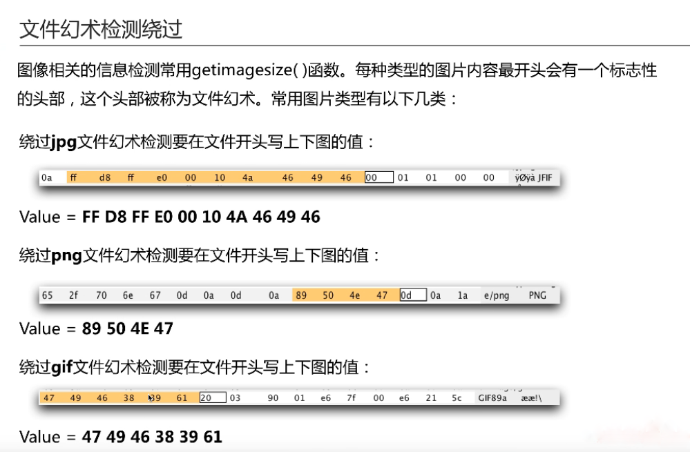

文件上传成因
如果不对被上传的文件进行限制或者限制被绕过,该功能便有可能会被利用上传可执行文件、脚本到服务器上,进而进一步导致服务器沦陷。很多原因导致文件上传漏洞,有以下几类:
1：服务器的错误的配置。
2：开源编辑器漏洞。
3：本地上传限制不严格被绕过。
4：服务端过滤不严格被绕过。
漏洞危害s
可能会造成网站被控制，服务器沦陷 甚至同一服务器的其他网站都沦陷
一般上传检测框架
客户端验证
服务端检测绕过
服务端MIME验证
MIME检测的是数据包content-type字段。常见的图片格式的MIME类型有三种类型:
(PNG图像：image/png)
(GIT图像：image/gif)
(JPG图像：image/jpeg)
服务端拓展名验证
黑名单
可以尝试文件名大小写
pHp AsP pY
特殊文件名
在Windows’下有一个特性就是如果文件后缀以点‘.’或者空格' '结尾的后缀名时,系统在保存文件时会自动去除点和空格。但要注意Unix/Linux系统没有这个特性。
.php5 .php3 这种格式一般不会被解析执行
.htaccess文件攻击
.htaccess文件是Apache服务器中的一一个配置文件，它负责相关目录下的网页配置。通过htaccess文件,可以帮我们实现:网页301重定向、自定义404错误页面、改变文件扩展名、允许/阻止特定的用户或者目录的访问、禁止目录列表、配置默认文档等功能。如果服务器对文件名控制不够严格,通过move_ uploaded_ file 函数把自己写的.htaccess 文件覆盖掉服务器上的这样就可以解析定义名单了。
.htaccess文件内容:
<FilesMatch "haha" >
SetHandler application/x-httpd-php
</FilesMatch>通过.htaccess文件调用php解释器去解析一个文件名中只要包含"haha" 这
个字符串的任意文件,无论你文件名是什么样子,只要包含”haha"这个字符
串,都可以被以php的方式来解析。
白名单
0x00截断
文件名后缀有一个%00字节,可以截断某些函数对文件名的判断。在许多语言函数中,处理字符串的函数中0x00被认为是终止符。例如:网站上传函数处理xx.asp%00.jpg时，首先后缀名是合法的jpg格式，可以上传,在保存文件时,遇到%00字符丢弃后面的jpg ,文件后缀最终保存的后缀名为xxx.asp
url编码组成：百分号+字符的ascii编码的十六进制,所以空格url编码为%20。空格的十六进制为0x20 上传文件的时候在burp-hex编码里找到上传文件结尾加空格的20改成00就可以构成00截断。但00截断只在asp程序上比较有效。
解析漏洞
apache
iis
nginx
配合文件包含
文件内容检测绕过
文件幻术检测绕过

- 本文链接：https://woosec.com/2020/04/25/%E6%96%87%E4%BB%B6%E4%B8%8A%E4%BC%A0/
- 版权声明：本博客所有文章除特别声明外，均默认采用 许可协议。